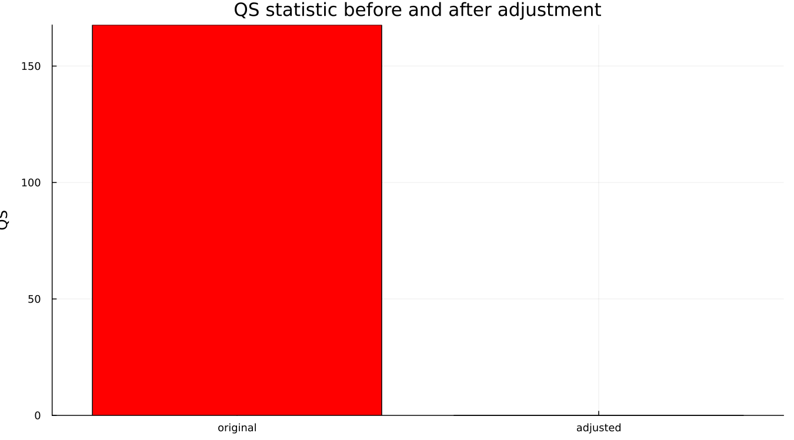
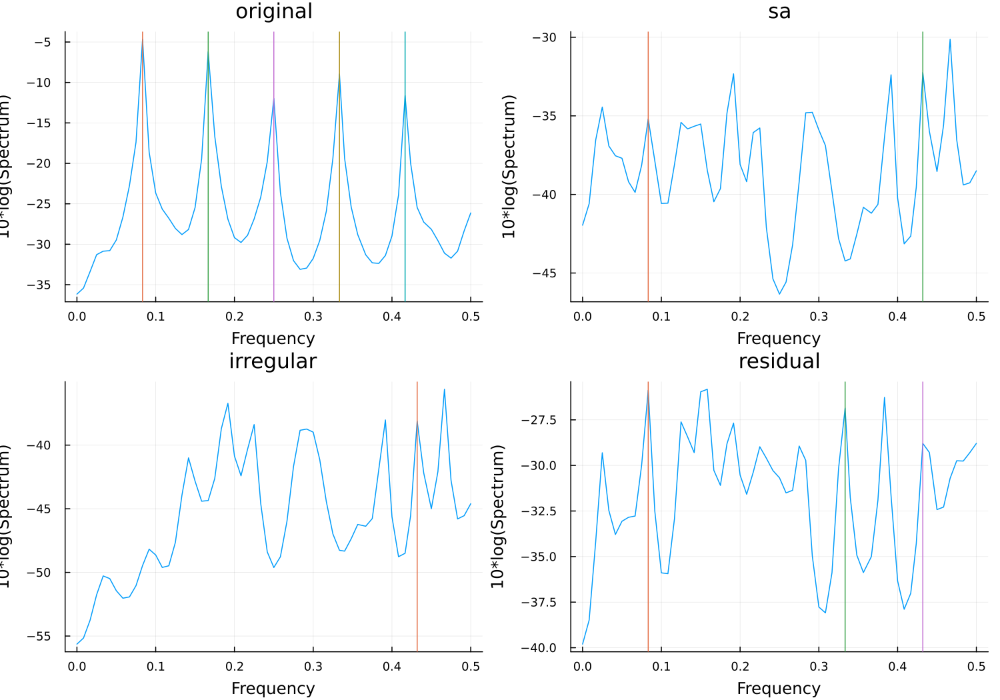
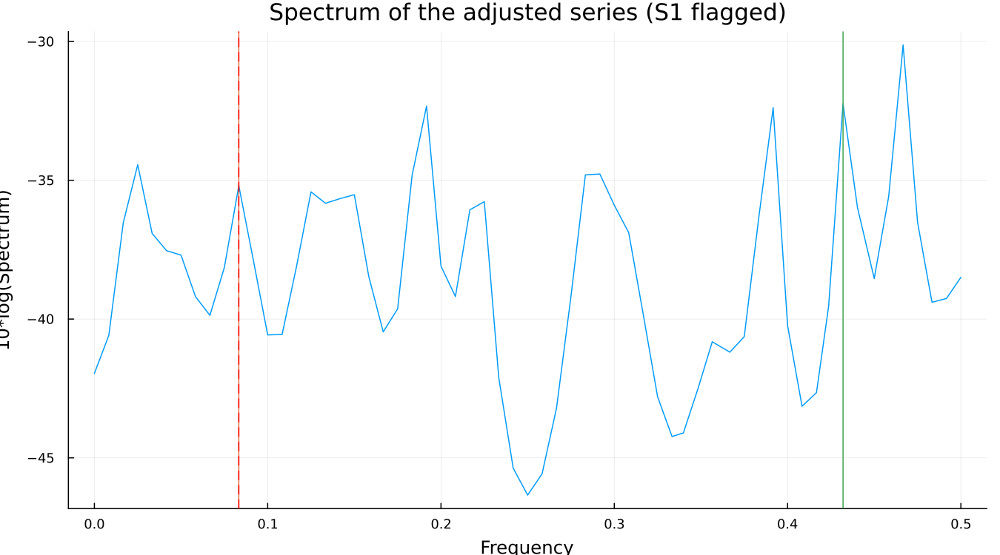
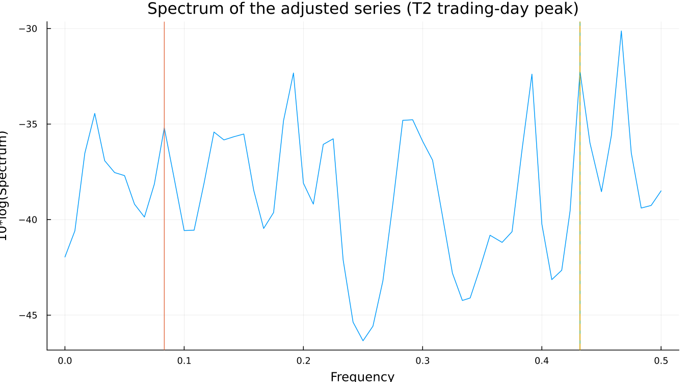

18. Residual Seasonality
18.1 The QS test
QS tests for autocorrelation specifically at seasonal lags — the pattern one wants to see is significant seasonal autocorrelation in the original series and none left in the adjusted one:

On the canonical spec, QS(original) = 167.65 (p = 0.000) collapses to QS(adjusted) = 0.00 (p = 1.000). Read on its own, that is about as clean a result as this test can report — the original series was overwhelmingly seasonal, and after adjustment there is exactly none left by this measure.
18.2 The F-tests
seasonality_tests adds the stable and moving seasonality F-tests (from the D8 SI-ratio table Chapter 6 introduced) and a combined identifiable-seasonality verdict. All of them agree with QS's own verdict on this series: strongly, unambiguously identifiable seasonality in the original data.
18.3 Reading a spectrum
A spectrum shows how much power a series has at each frequency. Five frequencies receive specific attention in an X-13 spectrum: the seasonal frequency and its harmonics (roughly 1, 2, 3, 4 and 5 cycles per year — labelled S1 through S5), and two trading-day frequencies (T1, T2). .udg reports each one as either nopeak or a height with a + marker, and the four series worth comparing are laid out together:

The original series' spectrum (top left) is dominated by seasonal power; the adjusted, irregular and residual spectra are comparatively flat — visually, adjustment has worked.
18.4 When they disagree
Here is where the chapter earns its length, and the number is verified, not illustrative:
QS on the seasonally adjusted series: 0.00, p = 1.000
spcsa.s1 (first seasonal frequency): 8.5 +
spcsa.t2 (second trading-day freq.): 12.0 +QS says the adjusted series has no seasonality left. The spectrum of that exact same series has a flagged peak at a seasonal frequency.

Both are correct, and both are measuring something real — they are simply not measuring the same thing. QS tests for autocorrelation specifically at seasonal lags; the spectrum looks for concentrated power at seasonal frequencies. A small regular component can register clearly in one without moving the other by much, and that is precisely what has happened here: the flagged S1 peak sits at a fairly modest height relative to the spectrum's other local peaks (visible in the figure above), while a much more prominent peak — at the trading-day frequency T2 — sits elsewhere entirely:

spcsa.dom — whether the flagged S1 peak is the dominant feature of the spectrum, not merely a flagged one — reports no here. A flagged, non-dominant seasonal peak on an adjustment that otherwise passes cleanly is common, and by itself is not a reason to reject the result. What it is a reason to do is treat it as a prompt: look for a calendar effect or regressor that might still be missing, in the same way Part III's trading-day and holiday chapters describe finding one.
It is worth stating plainly what makes this worth a full chapter rather than a footnote: this is the most-used series in the field, adjusted with ordinary settings, not a case constructed to make the point. That is what makes the disagreement land as a real property of the method rather than a contrived illustration of one.
See also: Chapter 16 for why a disagreement like this is the expected consequence of an unidentified decomposition, not a malfunction. Chapter 10 for the trading-day effect the T2 peak above is evidence of.